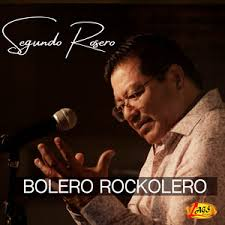

Segundo Rosero

Biografía
Segundo Rosero "La Voz y Sentimiento de América"
Rosero es conocido popularmente como "La Voz y Sentimiento de América".>
Aquí tienes una biografía de este destacado artista ecuatoriano: Segundo Aurelio Rosero Itaz (62 años en 2024) nació en Ecuador. Desde muy joven, a los 6 años, experimentó la separación de sus padres, encontrando en la música un refugio para expresar sus sentimientos. Su carrera musical comenzó en febrero de 1978. A lo largo de su trayectoria, ha grabado más de 400 canciones, abarcando una variedad de géneros musicales ecuatorianos y latinoamericanos. Aunque al inicio de su carrera fue difícil encasillarlo en un solo género debido a sus diversas influencias, Segundo Rosero logró definir su propio estilo, siendo reconocido principalmente por sus boleros rockoleros. Este género, como su nombre indica, fusiona el sentimiento del bolero con ritmos más modernos y enérgicos, característicos de la rockola. Segundo Rosero también interpreta otros géneros tradicionales ecuatorianos como el pasillo, el vals, el sanjuanito y la bomba, demostrando su versatilidad musical. A lo largo de su carrera, sus canciones han perdurado en el gusto del público, pasando de generación en generación. Ha realizado numerosas presentaciones a nivel nacional e internacional, consolidándose como uno de los artistas ecuatorianos más queridos y reconocidos.>Estilo Artístico
Aquí te detallo los elementos clave de su estilo:
- Bolero Rockolero como Identidad Principal: Este género es la marca registrada de Segundo Rosero. Toma la esencia melancólica y lírica del bolero tradicional y lo combina con instrumentación y ritmos más modernos y enérgicos, influenciados por la música de rockola. Esto crea un sonido único que apela tanto a los amantes del bolero clásico como a un público más joven.
- Interpretación Sentimental y Melódica: Su voz se caracteriza por su calidez, emotividad y un vibrato distintivo que transmite profundidad a sus interpretaciones, especialmente en los boleros y pasillos. Su capacidad para comunicar el sentimiento de las letras es uno de sus mayores fuertes.
- Versatilidad en Géneros Ecuatorianos: Aunque el bolero rockolero es su género más reconocido, Segundo Rosero también interpreta con maestría otros géneros tradicionales de Ecuador, como:
- Pasillo: Abordándolo con el lirismo y la nostalgia característicos de este género.
- Vals: Interpretando valses ecuatorianos con elegancia y sentimiento.
- Incursionando en este ritmo alegre y bailable con su propio estilo.
- Bomba del Valle del Chota: Género que marcó sus inicios y al que regresa ocasionalmente, mostrando su versatilidad rítmica.
- Adaptación de Clásicos: Rosero tiene la habilidad de tomar canciones clásicas de otros artistas y llevarlas a su propio terreno, imprimiéndoles su estilo y sentimiento particular, como su reconocida interpretación de "Nuestro Juramento".
- Conexión con el Sentir Popular: Sus letras, ya sean originales o adaptaciones, a menudo abordan temas universales como el amor, el desamor, la nostalgia y las experiencias de la vida cotidiana, conectando de manera profunda con el público latinoamericano.
- Presencia Escénica Sencilla y Auténtica: En sus presentaciones, Segundo Rosero se muestra como un artista cercano y auténtico, centrándose en la fuerza de su voz y la emoción de sus canciones, sin necesidad de grandes parafernalias.
- El Canario Rojo
- Sufro y Lloro
- Cuatro Paredes
- La Despedida
- Te Fuiste
- Como Duele Perderte
- El Pintor de mis Sueños
- Mi Linda Esposa
- Bella y Fatal
- Amor Sincero
Lista Detallada de Canciones
Exitos más sonados
17 AÑOS

BOLERO ROCKOLERO
Información de Contacto
Sitio web: https://www.segundorosero.com
Redes sociales: https://www.instagram.com/segundoroserooficial/